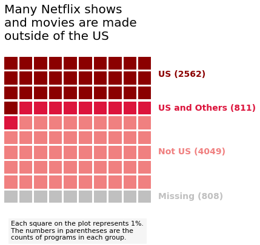
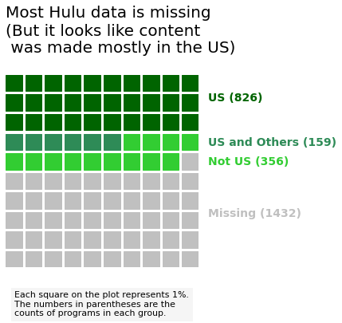

Hulu is only offered in the United States, but Netflix has a global presence. However, that has to do with viewers, not creators. Where is content made?


Netflix leverages international creators, with nearly 60% of its content from 2017- 2021 created entirely outside of the United States, or by international creators in partnership with the United States. Unfortunately, much of the information on the origin of programs is missing for Hulu in the data set. However, from the data we do have, we see that a larger percentage of content was produced exclusively in the United States (30%) versus content with an international component (19%).